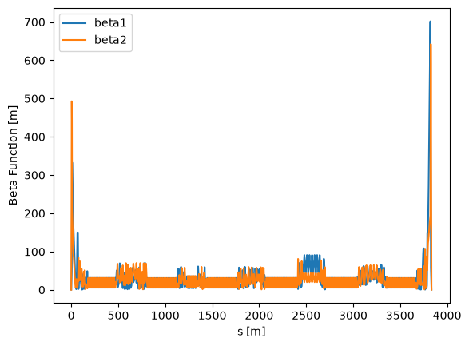
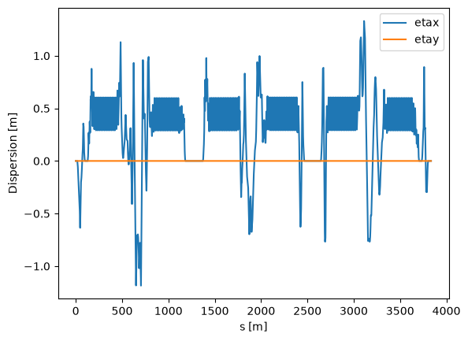
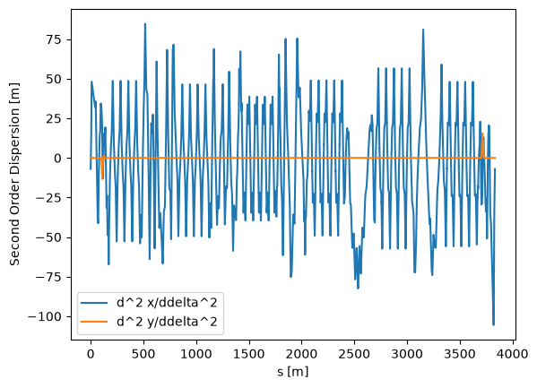
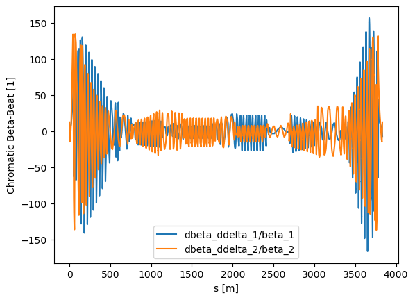
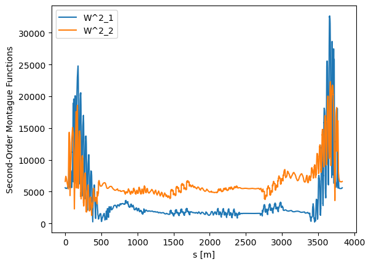

Nonlinear Twiss (Python example compatible with SciBmad version < 0.5.0)¶
This Jupyter notebook introduces SciBmad’s parametric nonlinear normal form routines, with the goal of familiarizing users with Truncated Power Series Algebra (TPSA) methods in accelerator physics. Various “nonlinear Twiss” calculations are made using the Electron Storage Ring of the Electron-Ion Collider. E.g., we will compute the beta function as a Taylor series in the momentum deviation \(\delta\), and can also do so as a Taylor series in variations of some parameters, e.g. sextupole strengths.
Map-based perturbation theory is an approach to perturbation theory introduced by Dragt and Finn, and developed in great detail for accelerator physics applications by Forest back in the early 90s. It is the only fully general and self consistent way to compute all such important quantities of the map, without any approximations up to the truncation order of the Taylor series. All quantities computed by SciBmad use this most powerful and general formalism.
from juliacall import Main as jl
jl.seval('using SciBmad')
import matplotlib.pyplot as plt
import numpy as np
Matplotlib is building the font cache; this may take a moment.
jl.include("../../lattices/esr-v6.3.1.jl"); # ESR lattice in lattices directory of SciBmad repo
ring = jl.ring
ring
Beamline:
species_ref = electron
pc_ref = 1.784626263654482e10
Index Name Kind s [m] L [m]
1 IP6 Marker 0 0.0f0
2 DRIFT0 Drift 0.0f0 5.3
3 Q1ER_6 Quadrupole 5.3 1.8
4 DRIFT1 Drift 7.1 0.5
5 Q2ER_6 Quadrupole 7.6 1.4
6 DRIFT2 Drift 9.0 7.74999999999994
7 D2ER_6 SBend 16.74999999999994 5.500091667736123
8 DRIFT3 Drift 22.25009166773606 19.81459999999994
9 SQ3ER_6 Quadrupole 42.064691667736 0.25
10 DRIFT4 Drift 42.314691667736 0.15000000000000568
11 Q3ER_6 Quadrupole 42.464691667736005 0.6
12 DRIFT5 Drift 43.06469166773601 3.5
13 SQ4ER_6 Quadrupole 46.56469166773601 0.25
⋮ ⋮ ⋮ ⋮ ⋮
6257 rows omitted
Let’s start by just calling twiss:
tw = jl.twiss(ring)
tw
Twiss:
summ:
q1 = 48.07999999808013
q2 = 44.14000000380505
etac = 0.000608873286122615
alphac = 0.0006088732861226137
df:
6271×26 DataFrame
Row │ index name kind s beta1 phi1 dx ⋯
│ [m] [m] [2π] [m] ⋯
──────┼─────────────────────────────────────────────────────────────────────────
1 │ 1 IP6 Marker 0.0 0.589999 0.0 4.74366e ⋯
2 │ 2 DRIFT0 Drift 0.0 0.589999 0.0 4.74366e
3 │ 3 Q1ER_6 Quadrupole 5.3 48.2002 0.232355 6.01291e
4 │ 4 DRIFT1 Drift 7.1 151.952 0.236135 1.05195e
⋮ │ ⋮ ⋮ ⋮ ⋮ ⋮ ⋮ ⋮ ⋱
6269 │ 6269 DRIFT2662 Drift 3828.2 57.607 47.8461 -5.58669e ⋯
6270 │ 6270 IP6 Marker 3834.0 0.589999 48.08 4.74366e
6271 │ -1 END --- 3834.0 0.589999 48.08 4.74366e
20 columns and 6264 rows omitted
To see what properties tw has, use propertynames:
print(jl.propertynames(tw))
[:q1, :q2, :etac, :alphac, :index, :name, :kind, :s, :beta1, :phi1, :dx, :x, :beta2, :phi2, :dy, :y, :slip, :alpha1, :alpha2, :px, :py, :z, :pz, :dpx, :dpy, :gammac, :c11, :c12, :c21, :c22]
We can plot the betas:
plt.plot(tw.s, tw.beta1, label='beta1')
plt.plot(tw.s, tw.beta2, label='beta2')
plt.xlabel('s [m]')
plt.ylabel('Beta Function [m]')
plt.legend()
plt;

Note that the plot shows \(\beta_1\) and \(\beta_2\) using a Teng-Edwards coupling formalism.
The closed orbit can be accessed from fields x, px, y, py, z, and pz, and the periodic dispersion can be obtained from dx, dpx, dy, and dpy. The syntax d<column>_<order> can be used for any scalar-valued to take a chromatic derivative, and by omitting _<order> the order is assumed to be 1.
plt.plot(tw.s, tw.dx, label='etax')
plt.plot(tw.s, tw.dy, label='etay')
plt.xlabel('s [m]')
plt.ylabel('Dispersion [m]')
plt.legend()
plt;

Higher order chromatic quantities can be computed by setting the chromatic order chrom appropriately, and requesting the corresponding column in the twiss result using cols. E.g., to get the second order dispersions \(\frac{\partial^2x}{\partial\delta^2}\), \(\frac{\partial^2y}{\partial\delta^2}\) as well as the chromatic beta beat \(\frac{\partial\beta_1}{\partial\delta}\), \(\frac{\partial\beta_2}{\partial\delta}\):
tw2 = jl.twiss(ring, cols=['dx_2', 'dy_2', 'beta1', 'dbeta1', 'beta2', 'dbeta2'], chrom=2)
tw2
Twiss:
summ:
q1 = 48.07999999808019 + 1.0002256005657928 δ
q2 = 44.14000000380508 + 0.9998145974907912 δ
etac = 0.0006088732861226299 + 0.0011325508462984035 δ
alphac = 0.0006088732861226285 + 0.0011325508462984011 δ
df:
6271×10 DataFrame
Row │ index name kind s dx_2 dy_2 beta1 ⋯
│ [m] [m] ⋯
──────┼─────────────────────────────────────────────────────────────────────────
1 │ 1 IP6 Marker 0.0 -6.98496 2.44576e-5 0.5899 ⋯
2 │ 2 DRIFT0 Drift 0.0 -6.98496 2.44576e-5 0.5899
3 │ 3 Q1ER_6 Quadrupole 5.3 16.294 0.00218448 48.2002
4 │ 4 DRIFT1 Drift 7.1 31.677 0.00206566 151.952
⋮ │ ⋮ ⋮ ⋮ ⋮ ⋮ ⋮ ⋮ ⋱
6269 │ 6269 DRIFT2662 Drift 3828.2 -32.4601 -0.00233934 57.607 ⋯
6270 │ 6270 IP6 Marker 3834.0 -6.98496 2.44576e-5 0.5899
6271 │ -1 END --- 3834.0 -6.98496 2.44576e-5 0.5899
4 columns and 6264 rows omitted
Note the chromaticities have also been computed
plt.plot(tw2.s, tw2.dx_2, label='d^2 x/ddelta^2')
plt.plot(tw2.s, tw2.dy_2, label='d^2 y/ddelta^2')
plt.xlabel('s [m]')
plt.ylabel('Second Order Dispersion [m]')
plt.legend()
plt;

nparray(tw2.dbeta1 / tw2.beta1
---------------------------------------------------------------------------
KeyboardInterrupt Traceback (most recent call last)
Cell In[20], line 1
----> 1 tw2.dbeta1 / tw2.beta1
File ~/miniconda3/envs/condamatt2/lib/python3.12/site-packages/ipykernel/displayhook.py:173, in ZMQShellDisplayHook.finish_displayhook(self)
171 self.msg = None
172 return
--> 173 self.session.send(self.pub_socket, msg, ident=self.topic)
174 self.msg = None
File ~/miniconda3/envs/condamatt2/lib/python3.12/site-packages/jupyter_client/session.py:856, in Session.send(self, stream, msg_or_type, content, parent, ident, buffers, track, header, metadata)
854 if self.adapt_version:
855 msg = adapt(msg, self.adapt_version)
--> 856 to_send = self.serialize(msg, ident)
857 to_send.extend(buffers) # type: ignore[arg-type]
858 longest = max([len(s) for s in to_send])
File ~/miniconda3/envs/condamatt2/lib/python3.12/site-packages/jupyter_client/session.py:727, in Session.serialize(self, msg, ident)
725 content = self.none
726 elif isinstance(content, dict):
--> 727 content = self.pack(content)
728 elif isinstance(content, bytes):
729 # content is already packed, as in a relayed message
730 pass
File ~/miniconda3/envs/condamatt2/lib/python3.12/site-packages/jupyter_client/session.py:103, in json_packer(obj)
96 """Convert a json object to a bytes."""
97 try:
98 return json.dumps(
99 obj,
100 default=json_default,
101 ensure_ascii=False,
102 allow_nan=False,
--> 103 ).encode("utf8", errors="surrogateescape")
104 except (TypeError, ValueError) as e:
105 # Fallback to trying to clean the json before serializing
106 packed = json.dumps(
107 json_clean(obj),
108 default=json_default,
109 ensure_ascii=False,
110 allow_nan=False,
111 ).encode("utf8", errors="surrogateescape")
KeyboardInterrupt:
tw2.dbeta1 / tw2.beta1
---------------------------------------------------------------------------
KeyboardInterrupt Traceback (most recent call last)
Cell In[18], line 1
----> 1 tw2.dbeta1 / tw2.beta1
File ~/.julia/packages/PythonCall/5WGSP/src/JlWrap/any.jl:295, in __truediv__(self, other)
293 return self._jl_callmethod($(pyjl_methodnum(pyjlany_op(*))), other)
294 def __truediv__(self, other):
--> 295 return self._jl_callmethod($(pyjl_methodnum(pyjlany_op(/))), other)
296 def __floordiv__(self, other):
297 return self._jl_callmethod($(pyjl_methodnum(pyjlany_op(÷))), other)
KeyboardInterrupt:
plt.plot(tw2.s, tw2.dbeta1 / tw2.beta1, label='d^2 x/ddelta^2')
plt.plot(tw2.s, tw2.dy_2, label='d^2 y/ddelta^2')
plt.xlabel('s [m]')
plt.ylabel('Second Order Dispersion [m]')
plt.legend()
plt;
Error in callback <function _draw_all_if_interactive at 0x16f908040> (for post_execute), with arguments args (),kwargs {}:
Error in callback <function flush_figures at 0x37782a5c0> (for post_execute), with arguments args (),kwargs {}:
/Users/matthewsignorelli/miniconda3/envs/condamatt2/lib/python3.12/site-packages/IPython/core/events.py:101: UserWarning: Creating legend with loc="best" can be slow with large amounts of data.
func(*args, **kwargs)
/Users/matthewsignorelli/miniconda3/envs/condamatt2/lib/python3.12/site-packages/IPython/core/pylabtools.py:158: UserWarning: Creating legend with loc="best" can be slow with large amounts of data.
fig.canvas.print_figure(bytes_io, **kw)
---------------------------------------------------------------------------
KeyboardInterrupt Traceback (most recent call last)
File ~/miniconda3/envs/condamatt2/lib/python3.12/site-packages/matplotlib/pyplot.py:300, in _draw_all_if_interactive()
298 def _draw_all_if_interactive() -> None:
299 if matplotlib.is_interactive():
--> 300 draw_all()
File ~/miniconda3/envs/condamatt2/lib/python3.12/site-packages/matplotlib/_pylab_helpers.py:133, in Gcf.draw_all(cls, force)
131 for manager in cls.get_all_fig_managers():
132 if force or manager.canvas.figure.stale:
--> 133 manager.canvas.draw_idle()
File ~/miniconda3/envs/condamatt2/lib/python3.12/site-packages/matplotlib/backend_bases.py:1989, in FigureCanvasBase.draw_idle(self, *args, **kwargs)
1987 if not self._is_idle_drawing:
1988 with self._idle_draw_cntx():
-> 1989 self.draw(*args, **kwargs)
File ~/miniconda3/envs/condamatt2/lib/python3.12/site-packages/matplotlib/backends/backend_agg.py:438, in FigureCanvasAgg.draw(self)
435 # Acquire a lock on the shared font cache.
436 with (self.toolbar._wait_cursor_for_draw_cm() if self.toolbar
437 else nullcontext()):
--> 438 self.figure.draw(self.renderer)
439 # A GUI class may be need to update a window using this draw, so
440 # don't forget to call the superclass.
441 super().draw()
File ~/miniconda3/envs/condamatt2/lib/python3.12/site-packages/matplotlib/artist.py:94, in _finalize_rasterization.<locals>.draw_wrapper(artist, renderer, *args, **kwargs)
92 @wraps(draw)
93 def draw_wrapper(artist, renderer, *args, **kwargs):
---> 94 result = draw(artist, renderer, *args, **kwargs)
95 if renderer._rasterizing:
96 renderer.stop_rasterizing()
File ~/miniconda3/envs/condamatt2/lib/python3.12/site-packages/matplotlib/artist.py:71, in allow_rasterization.<locals>.draw_wrapper(artist, renderer)
68 if artist.get_agg_filter() is not None:
69 renderer.start_filter()
---> 71 return draw(artist, renderer)
72 finally:
73 if artist.get_agg_filter() is not None:
File ~/miniconda3/envs/condamatt2/lib/python3.12/site-packages/matplotlib/figure.py:3282, in Figure.draw(self, renderer)
3279 # ValueError can occur when resizing a window.
3281 self.patch.draw(renderer)
-> 3282 mimage._draw_list_compositing_images(
3283 renderer, self, artists, self.suppressComposite)
3285 renderer.close_group('figure')
3286 finally:
File ~/miniconda3/envs/condamatt2/lib/python3.12/site-packages/matplotlib/image.py:133, in _draw_list_compositing_images(renderer, parent, artists, suppress_composite)
131 if not_composite or not has_images:
132 for a in artists:
--> 133 a.draw(renderer)
134 else:
135 # Composite any adjacent images together
136 image_group = []
File ~/miniconda3/envs/condamatt2/lib/python3.12/site-packages/matplotlib/artist.py:71, in allow_rasterization.<locals>.draw_wrapper(artist, renderer)
68 if artist.get_agg_filter() is not None:
69 renderer.start_filter()
---> 71 return draw(artist, renderer)
72 finally:
73 if artist.get_agg_filter() is not None:
File ~/miniconda3/envs/condamatt2/lib/python3.12/site-packages/matplotlib/axes/_base.py:3367, in _AxesBase.draw(self, renderer)
3364 if artists_rasterized:
3365 _draw_rasterized(self.get_figure(root=True), artists_rasterized, renderer)
-> 3367 mimage._draw_list_compositing_images(
3368 renderer, self, artists, self.get_figure(root=True).suppressComposite)
3370 renderer.close_group('axes')
3371 self.stale = False
File ~/miniconda3/envs/condamatt2/lib/python3.12/site-packages/matplotlib/image.py:133, in _draw_list_compositing_images(renderer, parent, artists, suppress_composite)
131 if not_composite or not has_images:
132 for a in artists:
--> 133 a.draw(renderer)
134 else:
135 # Composite any adjacent images together
136 image_group = []
File ~/miniconda3/envs/condamatt2/lib/python3.12/site-packages/matplotlib/artist.py:71, in allow_rasterization.<locals>.draw_wrapper(artist, renderer)
68 if artist.get_agg_filter() is not None:
69 renderer.start_filter()
---> 71 return draw(artist, renderer)
72 finally:
73 if artist.get_agg_filter() is not None:
File ~/miniconda3/envs/condamatt2/lib/python3.12/site-packages/matplotlib/legend.py:794, in Legend.draw(self, renderer)
791 Shadow(self.legendPatch, **self._shadow_props).draw(renderer)
793 self.legendPatch.draw(renderer)
--> 794 self._legend_box.draw(renderer)
796 renderer.close_group('legend')
797 self.stale = False
File ~/miniconda3/envs/condamatt2/lib/python3.12/site-packages/matplotlib/artist.py:38, in _prevent_rasterization.<locals>.draw_wrapper(artist, renderer, *args, **kwargs)
35 renderer.stop_rasterizing()
36 renderer._rasterizing = False
---> 38 return draw(artist, renderer, *args, **kwargs)
File ~/miniconda3/envs/condamatt2/lib/python3.12/site-packages/matplotlib/offsetbox.py:383, in OffsetBox.draw(self, renderer)
381 for c, (ox, oy) in zip(self.get_visible_children(), offsets):
382 c.set_offset((px + ox, py + oy))
--> 383 c.draw(renderer)
384 _bbox_artist(self, renderer, fill=False, props=dict(pad=0.))
385 self.stale = False
File ~/miniconda3/envs/condamatt2/lib/python3.12/site-packages/matplotlib/artist.py:38, in _prevent_rasterization.<locals>.draw_wrapper(artist, renderer, *args, **kwargs)
35 renderer.stop_rasterizing()
36 renderer._rasterizing = False
---> 38 return draw(artist, renderer, *args, **kwargs)
File ~/miniconda3/envs/condamatt2/lib/python3.12/site-packages/matplotlib/offsetbox.py:383, in OffsetBox.draw(self, renderer)
381 for c, (ox, oy) in zip(self.get_visible_children(), offsets):
382 c.set_offset((px + ox, py + oy))
--> 383 c.draw(renderer)
384 _bbox_artist(self, renderer, fill=False, props=dict(pad=0.))
385 self.stale = False
[... skipping similar frames: _prevent_rasterization.<locals>.draw_wrapper at line 38 (2 times), OffsetBox.draw at line 383 (1 times)]
File ~/miniconda3/envs/condamatt2/lib/python3.12/site-packages/matplotlib/offsetbox.py:383, in OffsetBox.draw(self, renderer)
381 for c, (ox, oy) in zip(self.get_visible_children(), offsets):
382 c.set_offset((px + ox, py + oy))
--> 383 c.draw(renderer)
384 _bbox_artist(self, renderer, fill=False, props=dict(pad=0.))
385 self.stale = False
File ~/miniconda3/envs/condamatt2/lib/python3.12/site-packages/matplotlib/artist.py:38, in _prevent_rasterization.<locals>.draw_wrapper(artist, renderer, *args, **kwargs)
35 renderer.stop_rasterizing()
36 renderer._rasterizing = False
---> 38 return draw(artist, renderer, *args, **kwargs)
File ~/miniconda3/envs/condamatt2/lib/python3.12/site-packages/matplotlib/offsetbox.py:823, in TextArea.draw(self, renderer)
821 def draw(self, renderer):
822 # docstring inherited
--> 823 self._text.draw(renderer)
824 _bbox_artist(self, renderer, fill=False, props=dict(pad=0.))
825 self.stale = False
File ~/miniconda3/envs/condamatt2/lib/python3.12/site-packages/matplotlib/artist.py:71, in allow_rasterization.<locals>.draw_wrapper(artist, renderer)
68 if artist.get_agg_filter() is not None:
69 renderer.start_filter()
---> 71 return draw(artist, renderer)
72 finally:
73 if artist.get_agg_filter() is not None:
File ~/miniconda3/envs/condamatt2/lib/python3.12/site-packages/matplotlib/text.py:909, in Text.draw(self, renderer)
905 textrenderer.draw_tex(gc, x, y, clean_line,
906 self._fontproperties, angle,
907 mtext=mtext)
908 else:
--> 909 textrenderer.draw_text(gc, x, y, clean_line,
910 self._fontproperties, angle,
911 ismath=ismath, mtext=mtext)
913 gc.restore()
914 renderer.close_group('text')
File ~/miniconda3/envs/condamatt2/lib/python3.12/site-packages/matplotlib/backends/backend_agg.py:245, in RendererAgg.draw_text(self, gc, x, y, s, prop, angle, ismath, mtext)
240 items = font._layout(
241 s, flags=get_hinting_flag(),
242 features=mtext.get_fontfeatures() if mtext is not None else None,
243 language=mtext.get_language() if mtext is not None else None)
244 size = prop.get_size_in_points()
--> 245 self._draw_text_glyphs_and_boxes(
246 gc, x, y, angle,
247 ((item.ft_object, size, item.glyph_index, 0, 1, item.x, item.y)
248 for item in items),
249 [])
File ~/miniconda3/envs/condamatt2/lib/python3.12/site-packages/matplotlib/backends/backend_agg.py:196, in RendererAgg._draw_text_glyphs_and_boxes(self, gc, x, y, angle, glyphs, boxes)
194 buffer *= 0xff
195 # draw_text_image's y is downwards & the bitmap bottom side.
--> 196 self._renderer.draw_text_image(
197 buffer,
198 bitmap.left, int(self.height) - bitmap.top + buffer.shape[0],
199 0, gc)
201 rgba = gc.get_rgb()
202 if len(rgba) == 3 or gc.get_forced_alpha():
File ~/miniconda3/envs/condamatt2/lib/python3.12/site-packages/matplotlib/backend_bases.py:976, in GraphicsContextBase.get_hatch_color(self)
973 return None
974 return Path.hatch(hatch, density)
--> 976 def get_hatch_color(self):
977 """Get the hatch color."""
978 return self._hatch_color
KeyboardInterrupt:
---------------------------------------------------------------------------
AttributeError Traceback (most recent call last)
File ~/miniconda3/envs/condamatt2/lib/python3.12/site-packages/PIL/ImageFile.py:663, in _save(im, fp, tile, bufsize)
662 try:
--> 663 fh = fp.fileno()
664 fp.flush()
AttributeError: '_idat' object has no attribute 'fileno'
During handling of the above exception, another exception occurred:
KeyboardInterrupt Traceback (most recent call last)
File ~/miniconda3/envs/condamatt2/lib/python3.12/site-packages/matplotlib_inline/backend_inline.py:126, in flush_figures()
123 if InlineBackend.instance().close_figures:
124 # ignore the tracking, just draw and close all figures
125 try:
--> 126 return show(True)
127 except Exception as e:
128 # safely show traceback if in IPython, else raise
129 ip = get_ipython()
File ~/miniconda3/envs/condamatt2/lib/python3.12/site-packages/matplotlib_inline/backend_inline.py:90, in show(close, block)
88 try:
89 for figure_manager in Gcf.get_all_fig_managers():
---> 90 display(
91 figure_manager.canvas.figure,
92 metadata=_fetch_figure_metadata(figure_manager.canvas.figure),
93 )
94 finally:
95 show._to_draw = []
File ~/miniconda3/envs/condamatt2/lib/python3.12/site-packages/matplotlib/backend_bases.py:2289, in FigureCanvasBase.print_figure(self, filename, dpi, facecolor, edgecolor, orientation, format, bbox_inches, pad_inches, bbox_extra_artists, backend, **kwargs)
2285 try:
2286 # _get_renderer may change the figure dpi (as vector formats
2287 # force the figure dpi to 72), so we need to set it again here.
2288 with cbook._setattr_cm(self.figure, dpi=dpi):
-> 2289 result = print_method(
2290 filename,
2291 facecolor=facecolor,
2292 edgecolor=edgecolor,
2293 orientation=orientation,
2294 bbox_inches_restore=_bbox_inches_restore,
2295 **kwargs)
2296 finally:
2297 if bbox_inches and restore_bbox:
File ~/miniconda3/envs/condamatt2/lib/python3.12/site-packages/matplotlib/backend_bases.py:2146, in FigureCanvasBase._switch_canvas_and_return_print_method.<locals>.<lambda>(*args, **kwargs)
2142 optional_kws = { # Passed by print_figure for other renderers.
2143 "dpi", "facecolor", "edgecolor", "orientation",
2144 "bbox_inches_restore"}
2145 skip = optional_kws - {*inspect.signature(meth).parameters}
-> 2146 print_method = functools.wraps(meth)(lambda *args, **kwargs: meth(
2147 *args, **{k: v for k, v in kwargs.items() if k not in skip}))
2148 else: # Let third-parties do as they see fit.
2149 print_method = meth
File ~/miniconda3/envs/condamatt2/lib/python3.12/site-packages/matplotlib/backends/backend_agg.py:537, in FigureCanvasAgg.print_png(self, filename_or_obj, metadata, pil_kwargs)
490 def print_png(self, filename_or_obj, *, metadata=None, pil_kwargs=None):
491 """
492 Write the figure to a PNG file.
493
(...) 535 *metadata*, including the default 'Software' key.
536 """
--> 537 self._print_pil(filename_or_obj, "png", pil_kwargs, metadata)
File ~/miniconda3/envs/condamatt2/lib/python3.12/site-packages/matplotlib/backends/backend_agg.py:486, in FigureCanvasAgg._print_pil(self, filename_or_obj, fmt, pil_kwargs, metadata)
481 """
482 Draw the canvas, then save it using `.image.imsave` (to which
483 *pil_kwargs* and *metadata* are forwarded).
484 """
485 FigureCanvasAgg.draw(self)
--> 486 mpl.image.imsave(
487 filename_or_obj, self.buffer_rgba(), format=fmt, origin="upper",
488 dpi=self.figure.dpi, metadata=metadata, pil_kwargs=pil_kwargs)
File ~/miniconda3/envs/condamatt2/lib/python3.12/site-packages/matplotlib/image.py:1722, in imsave(fname, arr, vmin, vmax, cmap, format, origin, dpi, metadata, pil_kwargs)
1720 pil_kwargs.setdefault("format", format)
1721 pil_kwargs.setdefault("dpi", (dpi, dpi))
-> 1722 image.save(fname, **pil_kwargs)
File ~/miniconda3/envs/condamatt2/lib/python3.12/site-packages/PIL/Image.py:2711, in Image.save(self, fp, format, **params)
2708 fp = cast(IO[bytes], fp)
2710 try:
-> 2711 save_handler(self, fp, filename)
2712 except Exception:
2713 if open_fp:
File ~/miniconda3/envs/condamatt2/lib/python3.12/site-packages/PIL/PngImagePlugin.py:1522, in _save(im, fp, filename, chunk, save_all)
1520 if single_im:
1521 _apply_encoderinfo(single_im, im.encoderinfo)
-> 1522 ImageFile._save(
1523 single_im,
1524 cast(IO[bytes], _idat(fp, chunk)),
1525 [ImageFile._Tile("zip", (0, 0) + single_im.size, 0, rawmode)],
1526 )
1528 if info:
1529 for info_chunk in info.chunks:
File ~/miniconda3/envs/condamatt2/lib/python3.12/site-packages/PIL/ImageFile.py:667, in _save(im, fp, tile, bufsize)
665 _encode_tile(im, fp, tile, bufsize, fh)
666 except (AttributeError, io.UnsupportedOperation) as exc:
--> 667 _encode_tile(im, fp, tile, bufsize, None, exc)
668 if hasattr(fp, "flush"):
669 fp.flush()
File ~/miniconda3/envs/condamatt2/lib/python3.12/site-packages/PIL/ImageFile.py:693, in _encode_tile(im, fp, tile, bufsize, fh, exc)
690 if exc:
691 # compress to Python file-compatible object
692 while True:
--> 693 errcode, data = encoder.encode(bufsize)[1:]
694 fp.write(data)
695 if errcode:
KeyboardInterrupt:
Woah, what is this? This is actually a Taylor series in the last phase space coordinate, \(\delta\) (note that there are NO RF cavities in the ring!). In particular, this basically says that at the beginning of the ring (which is the IP here), the closed orbit is,
Therefore, we have explicitly that \(\frac{\partial x_{co}}{\partial\delta} = 4.7436547838232309\times10^{-8}\) . This is exactly the periodic dispersion!
We can extract the periodic dispersion from the orbit using the tools provided by SciBmad’s GTPSA.jl package. To extract this particular monomial coefficient in the Taylor series, we can use the syntax:
eta_x_0 = t.orbit_x[0][[0,0,0,0,0,1]] # eta_x at the beginning
eta_x_0
4.743655115620802e-08
To apply this at every element in the orbit_x array,
eta_x = np.array([x[[0,0,0,0,0,1]] for x in t.orbit_x])
eta_y = np.array([x[[0,0,0,0,0,1]] for x in t.orbit_y])
# Now can plot the dispersions:
plt.plot(t.s, eta_x, label='eta_x')
plt.plot(t.s, eta_y, label='eta_y')
plt.xlabel('s [m]')
plt.ylabel('Dispersion [m]')
plt.legend()
plt;

So that’s pretty cool. But we said earlier that we want to do things like \(\frac{\partial\beta}{\partial\delta}\), or even \(\frac{\partial^2x_{co}}{\partial\delta^2}=\frac{\partial\eta_x}{\partial\delta}\) (“second-order” dispersion). Well, when twiss is called in the manner we did above, our TPSA defaults to 6 variables to 1st order. Lattice functions, such as \(\beta\), are first order quantities, as well as the dispersion. To get these higher order quantities, we must specify a TPSA of higher order. We can do that easily:
D2 = jl.Descriptor(6, 2); # 6 variables to 2nd order
tw = jl.twiss(ring, GTPSA_descriptor=D2)
Now if we look at the closed orbit:
t = tw.table
t.orbit_x[0]
TPS64{GTPSA.Dynamic}:
Descriptor(NV=6, MO=2)
COEFFICIENT ORDER EXPONENTS
4.7436551156208019E-08 1 0 0 0 0 0 1
-6.9849628570685152E+00 2 0 0 0 0 0 2
Our closed orbit Taylor series is one order higher! The monomial coefficient specified by
0 0 0 0 0 2
corresponds to \(\frac{1}{2!}\frac{\partial^2x_{co}}{\partial\delta^2}=\frac{1}{2!}\frac{\partial\eta_x}{\partial\delta}\), the second-order dispersion!
Let’s now plot both second-order dispersions around the ring:
deta_ddelta_x = np.array([2*x[[0,0,0,0,0,2]] for x in t.orbit_x]) # Multiply by 2! to get only derivative
deta_ddelta_y = np.array([2*x[[0,0,0,0,0,2]] for x in t.orbit_y]) # Multiply by 2! to get only derivative
plt.plot(t.s, deta_ddelta_x, label='deta_ddelta_x')
plt.plot(t.s, deta_ddelta_y, label='deta_ddelta_y')
plt.xlabel('s [m]')
plt.ylabel('Second-Order Dispersion [m]')
plt.legend()
plt;

The beta functions now will also be TPSAs in \(\delta\):
t.beta_1[0]
TPS64{GTPSA.Dynamic}:
Descriptor(NV=6, MO=2)
COEFFICIENT ORDER EXPONENTS
5.8999920399337424E-01 0 0 0 0 0 0 0
-4.1353894277617194E+00 1 0 0 0 0 0 1
Let’s plot \(\frac{\partial\beta/\partial\delta}{\beta}\) around the ring:
beta_1 = np.array([x[[0,0,0,0,0,0]] for x in t.beta_1])
beta_2 = np.array([x[[0,0,0,0,0,0]] for x in t.beta_2])
dbeta_ddelta_1 = np.array([x[[0,0,0,0,0,1]] for x in t.beta_1])
dbeta_ddelta_2 = np.array([x[[0,0,0,0,0,1]] for x in t.beta_2])
plt.plot(t.s, dbeta_ddelta_1/beta_1, label='dbeta_ddelta_1/beta_1')
plt.plot(t.s, dbeta_ddelta_2/beta_2, label='dbeta_ddelta_2/beta_2')
plt.xlabel('s [m]')
plt.ylabel('Chromatic Beta-Beat [1]')
plt.legend()
plt;

We can also write the Montague functions, which are phase invariants in achromatic regions, as
alpha_1 = np.array([x[[0,0,0,0,0,0]] for x in t.alpha_1])
alpha_2 = np.array([x[[0,0,0,0,0,0]] for x in t.alpha_2])
dalpha_ddelta_1 = np.array([x[[0,0,0,0,0,1]] for x in t.alpha_1])
dalpha_ddelta_2 = np.array([x[[0,0,0,0,0,1]] for x in t.alpha_2])
W_1 = np.sqrt((dalpha_ddelta_1-alpha_1/beta_1*dbeta_ddelta_1)**2 + (dbeta_ddelta_1/beta_1)**2)
W_2 = np.sqrt((dalpha_ddelta_2-alpha_2/beta_2*dbeta_ddelta_2)**2 + (dbeta_ddelta_2/beta_2)**2)
plt.plot(t.s, W_1, label='W_1')
plt.plot(t.s, W_2, label='W_2')
plt.xlabel('s [m]')
plt.ylabel('Montague Functions')
plt.legend()
plt;

In SciBmad, we don’t have to stop at second order. We can go to whatever order we want. We could literally compute the 20th order dispersion if we’d like, simply specify a GTPSA descriptor with truncation order 20. Same for the Montague functions.
Let’s compute the “second order Montague functions” defined as
Note that this terminology may be confusing, because we need third order truncation to compute the “second order Montague functions”.
D3 = jl.Descriptor(6, 3) # 6 variables to 3rd order
tw = jl.twiss(ring, GTPSA_descriptor=D3)
t = tw.table
d2alpha_ddelta2_1 = np.array([x[[0,0,0,0,0,2]] for x in t.alpha_1])
d2alpha_ddelta2_2 = np.array([x[[0,0,0,0,0,2]] for x in t.alpha_2])
d2beta_ddelta2_1 = np.array([x[[0,0,0,0,0,2]] for x in t.beta_1])
d2beta_ddelta2_2 = np.array([x[[0,0,0,0,0,2]] for x in t.beta_2])
W2_1 = np.sqrt((d2alpha_ddelta2_1-alpha_1/beta_1*d2beta_ddelta2_1)**2 + (d2beta_ddelta2_1/beta_1)**2)
W2_2 = np.sqrt((d2alpha_ddelta2_2-alpha_2/beta_2*d2beta_ddelta2_2)**2 + (d2beta_ddelta2_2/beta_2)**2)
plt.plot(t.s, W2_1, label='W^2_1')
plt.plot(t.s, W2_2, label='W^2_2')
plt.xlabel('s [m]')
plt.ylabel('Second-Order Montague Functions')
plt.legend()
plt;

Finally, let’s look at the amplitude-dependent tunes to 4th order. We can do this easily by getting the tunes field in the original Twiss structure:
jl.GTPSA.show_eps=1e-10 # Hide tiny monomials
tw.tunes
3-element StaticArraysCore.SVector{3, TPS64{GTPSA.Dynamic}}:
Descriptor(NV=6, MO=3)
INDEX COEFFICIENT ORDER EXPONENTS
----------------------------------------------------
1: 7.9999998080130461E-02 0 0 0 0 0 0 0
1: 1.0002255976895222E+00 1 0 0 0 0 0 1
1: 3.7403883448614374E+02 2 1 1 0 0 0 0
1: -1.5651507184369349E+04 2 0 0 1 1 0 0
1: -1.1047251314958793E+02 2 0 0 0 0 0 2
----------------------------------------------------
2: 1.4000000380501454E-01 0 0 0 0 0 0 0
2: 9.9981459749079094E-01 1 0 0 0 0 0 1
2: -1.5651507184369515E+04 2 1 1 0 0 0 0
2: 2.4815299800462444E+03 2 0 0 1 1 0 0
2: 1.2018396765130665E+02 2 0 0 0 0 0 2
----------------------------------------------------
3: -2.3344227124645047E+00 1 0 0 0 0 0 1
3: 6.2846027792671553E+00 2 1 1 0 0 0 0
3: 6.2820203888584834E+00 2 0 0 1 1 0 0
3: -2.1711023285782844E+00 2 0 0 0 0 0 2
... (Output truncated)
The amplitude dependent tunes in tunes are always in the phasor’s basis, e.g. \(\sqrt{J}e^{\pm \textrm{i}\phi}\). This is why you see the same orders for canonically-conjugate variables in each oscillation mode, because e.g. 1 1 corresponds to \((\sqrt{J}e^{-\textrm{i}\phi})^1(\sqrt{J}e^{+ \textrm{i}\phi})^1=J\). Therefore, here \(\frac{\partial Q_x}{\partial J_y}=-1.5651507184369349\times 10^4\). Because there is coasting beam (no pseudo-harmonic oscillations in the longitudinal), the quantity \(\delta\) is the invariant for that plane.
Now let’s see how the tunes vary with \(\delta\). For this we will go to order 6, and use the at kwarg to specify computing the Twiss table at no elements to save time (will just compute the tunes):
tw = jl.twiss(ring, GTPSA_descriptor=jl.Descriptor(6, 6), at=[])
delta = np.arange(-1, 1.01, 0.01)*10**-2
# We can evaluate these Taylor series like any other function:
Qx = tw.tunes[0]
Qy = tw.tunes[1]
Qxeval = [Qx(0,0,0,0,0,x) for x in delta]
Qyeval = [Qy(0,0,0,0,0,x) for x in delta]
plt.plot(delta, Qxeval, label='Q_x')
plt.plot(delta, Qyeval, label='Q_y')
plt.xlabel('delta')
plt.ylabel('Fractional Tunes')
plt.legend()
plt;